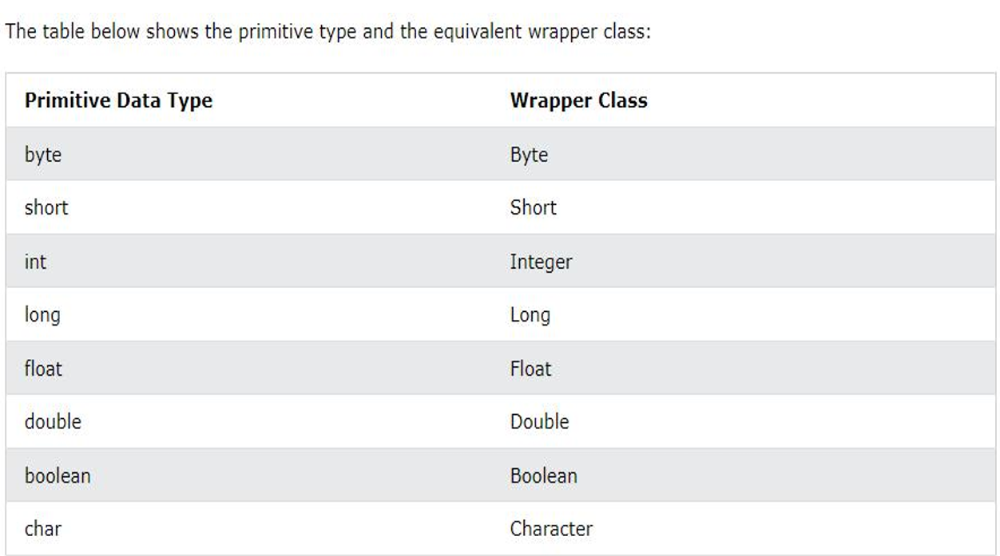

Wrapper class
- The wrapper class in Java provides the mechanism to convert primitive into object and object into primitive.
- In Java, we have 8 primitive data types.
- Each primitive type has a corresponding wrapper class.

Why do we need wrapper?
- Whenever the primitive types are required as an object, wrapper classes can be used. Wrapper classes also include methods to unwrap the object and give back the primitive data type.
- In java.util package, the classes handle only objects and that's why in this case wrapper class helps.
- In the Collection framework, Data Structures such as ArrayList stores only the objects and not the primitive types.
- Java Collections deal only with objects; to store a primitive type in one of these classes, you need to wrap the primitive type in a class.
Converting Primitive Types to Wrapper Class:
There are two ways for converting a primitive type into an instance of the corresponding wrapper class
- Using constrcutors
- Using static factory methods
Example for boxing:
Example for Unboxing:
The conversion of wrapper class type into corresponding primitive type, is known as Unboxing. Let's see the example of unboxing
Example for Autoboxing:
The automatic conversion of primitive data type into its corresponding wrapper class is known as autoboxing, for example, byte to Byte, char to Character, int to Integer, long to Long, float to Float, boolean to Boolean, double to Double, and short to Short.